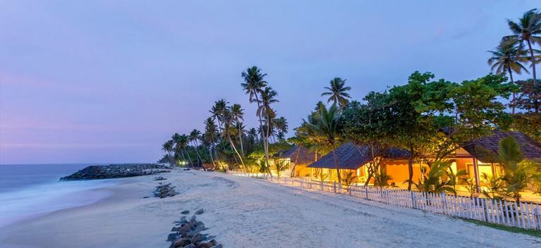

BEACHES
Kerala's 580-kilometre coastline features some of India's finest beaches, blending golden sands, palm-fringed shores, and unique geographical formations. Iconic destinations like Kovalam Beach are globally renowned for crescent-shaped shores, vibrant nightlife, and luxury Ayurvedic wellness resorts. Further north, the famous Varkala Beach stands out as the only spot in southern Kerala where towering lateral cliffs meet the Arabian Sea, housing popular cliffside cafes and natural mineral springs. For travellers seeking quiet isolation, Marari Beach in Alappuzha offers an untouched getaway characterized by traditional fishing villages and swaying coconut groves. Additionally, unique coastal features like the Muzhappilangad Drive-in Beach allow visitors to drive vehicles directly along the surf, making Kerala a diverse paradise for beach lovers, adventure seekers, and nature enthusiasts alike

VARKALA BEACH
The Varkala Beach is also known as the Papanasam beach. It is one of the main beaches at Varkala and famous for its religious significance. Close to the Papanasam beach is the ancient Janardhana Swamy temple or Varkala temple which is probably one of the oldest Hindu temples in Kerala. The temple is dedicated to the worship of Lord Vishnu in the form of Janardana swamy.Varkala beach has a remarkable stretch of red laterite cliffs. It is the only place in southern Kerala where cliffs are found adjacent to the sea. The cliffs have been declared a national geological monument by the Geological Survey of India. It is a unique geological feature on the otherwise flat Kerala coast, and is known among geologists as the 'Varkala Formation'.Varkala beach offers a variety of adventure sports such as surfing, parasailing, paragliding and stand-up paddle-boarding. Whether speeding across the waves or soaring above the coastline, adventure seekers are guaranteed an unforgettable experience. With experienced guides to assist, water sports in Varkala is for adventurers of all ages.

KOVALAM BEACH
Kovalam, a world-famous beach destination, is cherished for its three crescent-shaped beaches and tranquil waters, perfect for sea bathing. The rocky headland here creates a serene bay, making it an enchanting spot for tourists. From sunbathing and swimming to rejuvenating Ayurvedic massages and thrilling catamaran rides, there's something for everyone. Visitors can also enjoy Kerala's vibrant cultural heritage through special performances organized here. With its tropical sun, Kovalam guarantees a golden tan in minutes. As the day winds down, the beach comes alive, with nightlife continuing well into the early hours.Lighthouse Beach is one of Kovalam's highlights. Climbing the Vizhinjam Lighthouse rewards visitors with breathtaking views of the coastline and the refreshing sea breeze—a perfect backdrop for memorable photographs. The charm of Kovalam extends beyond the beach, offering numerous places to explore. The Karamana River invites visitors to enjoy peaceful boat rides amid scenic beauty. Vellayani Lake, a favorite picnic spot, offers opportunities for boating and fishing, making it an ideal retreat for nature lovers. History enthusiasts can visit the Vizhinjam Rock Cut Cave Temple, an ancient Hindu shrine dedicated to Lord Shiva, which reflects India's rich cultural heritage. Art lovers can explore the Kovalam Art Gallery and the Kerala Art and Craft Village, both showcasing exquisite traditional crafts by local artisans.

MARARI BEACH
Marari Beach, located in the Alappuzha district of Kerala, is an ideal destination for those seeking a peaceful and serene beach experience. Named after Mararikulam, a picturesque fishing village along the coast, Marari Beach is perfect for beachgoers who want to relax amidst swaying coconut palms and golden sands, away from the hustle and bustle of city life.The beach offers a tranquil setting for long walks, and visitors can indulge in traditional Ayurvedic wellness treatments for a rejuvenating experience. While the beach lacks water sports and beach shacks, tourists can rent beach chairs and umbrellas to enjoy the serene environment. Exploring the neighboring villages by strolling or cycling offers a glimpse into the slow-paced life of the local fisherfolk. Observing them at work and engaging in conversations might even lead to an impromptu boat ride, if the fishermen deem it safe. Marari Beach experiences warm and humid weather throughout the year. The beach's proximity to other attractions like the backwaters of Alappuzha, Alappuzha Beach, the Lighthouse, Kumarakom Bird Sanctuary, and the International Coir Museum makes it a convenient base for exploring the region